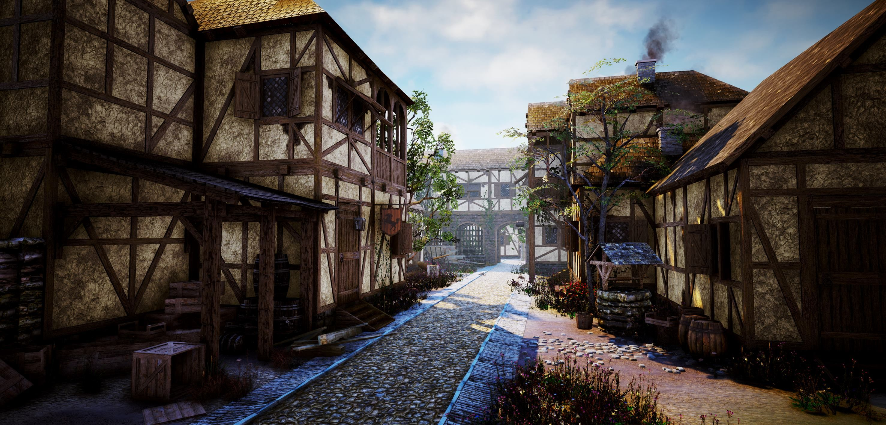

Du entscheidest dich zum schmied zu gehen. Du läufst durch die dichten strassen von Finsterwacht, die Häuser säuberlich und stabil eingegliedert reich an Dekorationen. Nach ein paar minuten ist der gegenstrom an Menschen nicht mehr so gross und du kommst schneller vorwärtz ohne das ganze gedrängel und das festhalten deines Geldbeutels. Du erreichst eine weitere Zweigung der Strasse doch diese fühlt sich anders an. Es führt ein schmaler Weg in eine Gasse zwischen ein paar Häuser und du erkennst das am ende der Gasse einige Fäser und Kisten zu stehen scheinen. Lässt du dich abbringen und kuckst dir die Gasse an oder bleibst du auf dem direktem Weg zum schied?

Ich lasse mich nicht ablenken! Gehe weiter zum Schmied